화공기사(구)(구) (2010-09-05 기출문제)
1과목: 화공열역학
1. 한 물체의 가역적인 단열 변화에 대한 엔트로피(entropy)의 변화 △S는?
- △S = 0
- △S ＞ 0
- △S ＜ 0
- △S = ∞
(정답률: 60%)

2. 등온과정의 부피 V에 대한 엔트로피 S의 변화는 맥스웰(Maxwell)관계식에서 어떻게 나타나는가?
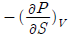
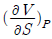
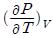
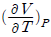
(정답률: 65%)
3. 20mol% A, 35mol% B, 45mol% C 를 포함하는 3성분 기체 혼합물이 있다. 60atm, 75℃ 에서 이 혼합물이 성분 A, B, C 의 퓨개시티 계수가 각각 0.7, 0.6, 0.9 일 때 이 혼합물의 퓨개시티는 얼마인가?
- 34.6atm
- 44.6atm
- 54.6atm
- 64.6atm
(정답률: 70%)
4. 혼합물에서 과잉물성(excess property)에 관한 설명으로 가장 옳은 것은?
- 실제용액의 물성값에 대한 이상용액의 물성값의 차이다.
- 실제용액의 물성값과 이상용액의 물성값의 합이다.
- 이상용액의 물성값에 대한 실제용액의 물성값의 비이다.
- 이상용액의 물성값과 실제용액의 물성값의 곱이다.
(정답률: 70%)
5. 퓨개시티(Fugacity) fi 및 퓨개시티 계수 φi 에 관한 설명으로 옳은 것은?(단,
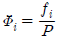
이다.)- 이상 기체에 대한
 의 값은 무한대가 된다.
의 값은 무한대가 된다. - 잔류 깁스(Gibbs) 에너지
 과 φi와의 관계는
과 φi와의 관계는  Inφi로 표시된다.
Inφi로 표시된다. - 퓨개시티 계수 φi의 단위는 압력의 단위를 가진다.
- 주어진 성분의 퓨개시티가 모든 상에서 서로 다른 값을 가지면 접촉하고 있는 상들은 평형에 도달할 수 있다.
(정답률: 64%)
6. 20℃ 에 있어서 아세톤의 대략적인 증발잠열을 클라우지우스-클레이페이론(Clausius-Clapeyron)식을 이용하여 구하면 약 몇 cal/mol 인가? (단, 20℃ 에 있어서의 아세톤의 증기압은 179.3mmHg 이고 표준 끓는점은 56.5℃ 이다.)
- 759
- 1000
- 7590
- 10000
(정답률: 50%)
7. 벤젠, 톨루엔, 크실렌의 3성분 용액이 기상과 액상으로 평형을 이루고 있을 때 이 계에 대한 자유도수는?
- 0
- 1
- 2
- 3
(정답률: 37%)
8. 세기성질(intensive property)에 해당하는 것은?
- 온도
- 부피
- 에너지
- 질량
(정답률: 58%)
9. 한 발명가가 300℃ 의 뜨거운 열저장고 사이에서 10kJ 의 열을 얻어서 4.2kJ 의 일을 생산하고 5.8kJ의 열을 30℃의 차가운 열저장고로 방출하는 사이클 엔진을 발명하였다면 열역학 법칙이 성립하는지를 옳게 설명한 것은?
- 열역학 제1법칙과 열역학 제2법칙 모두 성립한다.
- 열역학 제1법칙은 성립하고 열역학 제2법칙은 위배된다.
- 열역학 제1법칙은 위배되고 열역학 제2법칙은 성립한다.
- 열역학 제1법칙과 열역학 제2법칙 모두 위배된다.
(정답률: 19%)
10. 다음 중 액-액 상평형 계산에 적합하지 않은 모델은?
- NRTL 모델
- UNIQUAC 모델
- Wilson 모델
- UNIFAC 모델
(정답률: 37%)
11. 그림에 표시된 T-S 도표는 어떤 사이클을 나타내고 있는가?
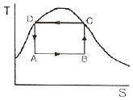
- 카르노(Carnot) 열기관 사이클
- 카르노(Carnot) 냉동 사이클
- 브레이턴(Brayton) 사이클
- 랭킨(Rankine) 사이클
(정답률: 30%)
12. 열역학 제2법칙의 수학적 표현에 해당하는 것은?
- △U + △KE + △PE = Q+W
- △Stotal ≥ 0
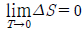
- dU = dQ + dW
(정답률: 64%)
13. 어떤 화학반응에서 평형상수 K의 온도에 대한 미분계수가 다음과 같이 표시된다. 이 반응에 대한 설명으로 옳은 것은?
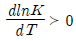
- 흡열반응이며, 온도상승에 따라 K의 값이 커진다.
- 흡열반응이며, 온도상승에 따라 K의 값이 작아진다.
- 발열반응이며, 온도상승에 따라 K의 값이 커진다.
- 발열반응이며, 온도상승에 따라 K의 값이 작아진다.
(정답률: 54%)
14. 다음 중 실제기체가 이상기체에 가장 가까울 때의 조건은?
- 저압저온
- 고압저온
- 저압고온
- 고압고온
(정답률: 55%)
15. 내연기관 중 자동차에 사용되고 있는 것으로 흡입 행정은 거의 정압에서 일어나며, 단열압축 과정 후 전기 점화에 의해 단열 팽창하는 사이클은?
- 오토(Otto)
- 디젤(Diesel)
- 카르노(Carnot)
- 랭킨(Rankin)
(정답률: 37%)
16. 이상기체로 가정한 2몰의 질소를 250℃ 에서 역학적으로 가역인 정압과정으로 430℃ 까지 가열 팽창시켰을 때 엔탈피변화량 △H 는 약 몇 kJ 인가? (단, 이 온도영역에서 일정압력 열용량의 값은 일정하며, 20.785J/mol K 이다.)
- 3.75
- 7.5
- 15.0
- 30.0
(정답률: 42%)
17. 평형에 대한 다음의 조건 중 틀린 것은?(단, φi 는 순수성분의 퓨개시티계수,
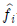
는 혼합물에서 성분 i 의 퓨개시티, ri 는 활동도계수,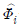
는 성분 i 의 퓨개시티계수이고, xi 는 액상에서 성분 i 의 조성이다. 상첨자 V 는 기상, L 은 액상, S 는 고상, Ⅰ과 Ⅱ 는 두 액상을 나타낸다.)- 순수성분의 기-액 평행 :

- 2성분 혼합물의 기-액 평행 :

- 2성분 혼합물의 액-액 평형 :

- 2성분 혼합물의 고체-기체 평형 :

(정답률: 28%)
18. 다음 열역학적 성질에 관한 설명 중 틀린 것은?
- 일은 상태함수가 아니다.
- 이상기체에 있어서 Cp - Cv = R 의 식이 성립한다.
- 크기설질은 그 물질의 양과 관계가 있다.
- 변화하려는 경향이 최대일 때 그 계는 평형에 도달하게 된다.
(정답률: 55%)
19. 1atm 의 외압 조건에 있는 1mol 의 이상기체 온도를 7.5K 만큼 상승시켰다면 이상기체가 외계에 대하여 한 최대 일의 크기는 몇 cal 인가?
- 14.90
- 15.55
- 17.08
- 18.21
(정답률: 55%)
20.
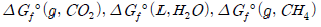
값이 각각 -94.3kcal/mol, -56.7kcal/mol, -12.14kcal/mol 일 때 298K 에서 다음 반응의 표준 깁스에너지 변화 값은 약 몇 kcal/mol 인가? (단, 는 298K 에서의 표준생성 에너지이다.)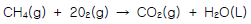
- -180.5
- -195.6
- -220.3
- -340.2
(정답률: 20%)
2과목: 화학공업양론
21. 1mol 의 NH3를 다음과 같은 반응에서 산화시킬 때 O2를 30% 과잉 사용하였다. 만일 반응의 완결도가 85% 라 하면 남아있는 산소는 몇 mol 인가?
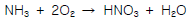
- 0.3
- 0.7
- 0.85
- 0.9
(정답률: 30%)
22. H2SO4 15% 인 폐산에 90% 농황산을 가하여 45% 의 산 1500kg 을 만들려고 한다. 폐산 몇 kg 에 농황산 몇 kg 을 혼합해야 하는가?
- 750kg 폐산, 750kg 농황산
- 850kg 폐산, 650kg 농황산
- 600kg 폐산, 900kg 농황산
- 900kg 폐산, 600kg 농황산
(정답률: 28%)
23. 101kpa 에서 물 1몰을 353K 에서 393K 까지 가열할 때 엔탈피 변화는 약 몇 J 인가? (단, 물의 비열은 75.0J/molㆍK, 물의 기화열은 47.3kJ/mol, 수증기의 비열은 354.J/molㆍK 이다.)
- 3102
- 48008
- 49508
- 52080
(정답률: 알수없음)
24. NaOH 6g 을 물에 녹여 전체 용액 100mL 를 만들었다면 이 용액의 몰농도는?
- 1.5M
- 0.15M
- 6.0M
- 0.6M
(정답률: 34%)
25. 5atm 의 압력과 가장 가까운 값을 나타내는 것은?
- 516.6kgf/cm2
- 7.07psi
- 50.6mmHg
- 50.66N/cm2
(정답률: 30%)
26. 다음과 같은 베르누이 방정식이 적용되는 조건이 아닌 것은?
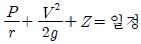
- 정상상태의 흐름
- 이상유체의 흐름
- 압축성유체의 흐름
- 동일 유선상의 유체
(정답률: 34%)
27. 탄소 3g을 산소 16g 중에서 완전연서 시켰을 때 연소 후 혼합기체의 부피는 표준상태에서 몇 L 인가?
- 5.6
- 11.2
- 19.8
- 22.4
(정답률: 37%)
28. 보일러에 Na2SO3 를 가하여 공급수 중의 산소를 제거한다. 보일러 공급수 100톤에 산소함량 4ppm 일때 이 산소를 제거하는데 필요한 Na2SO3 의 이론량은?
- 3.15kg
- 4.15kg
- 5.15kg
- 6.15kg
(정답률: 20%)
29. 단열 과정에서의 P, V, T 관계를 옳게 나타낸 것은? (단, 비열비 r 는
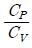
이다.)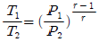
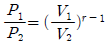
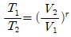
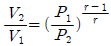
(정답률: 40%)
30. 질소와 수소 혼합가스가 1000 기압을 유지하고 있으며, 수소의 분압이 750 기압이라면 혼합가스의 평균 분자량은 얼마인가?
- 4.3
- 6.4
- 8.5
- 9.6
(정답률: 46%)
31. 물의 3중점에 대한 설명 중 옳은 것은?
- 3중점이 존재하는 상태를 규정하기 위한 변수의 수는 3개이다.
- 3중점이 존재하는 상태는 임의로 변화될 수 있다.
- 3중점에서 계의 자유도는 1로서 압력만이 독립변수이다.
- 기체-고체, 기체-액체, 고체-액체 선이 서로 교차하는 점이다.
(정답률: 37%)
32. 다음 식을 이용하여 100g 의 N2 를 100℃ 에서 200℃ 까지 가열하는데 필요한 열량을 구하면 약 몇 kcal 인가?
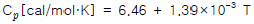
- 1.0
- 1.5
- 2.0
- 2.5
(정답률: 25%)
33. 시량변수와 시강변수에 대한 설명으로 옳은 것은?
- 시량변수에는 체적, 온도, 비체적이 있다.
- 시강변수에는 온도, 질량, 밀도가 있다.
- 계의 크기는 무관한 변수가 시강변수이다.
- 시강변수는 계의 상태를 규정할 수 없다.
(정답률: 42%)
34. 펄프를 건조기 속에 넣어 수분을 증발시키는 공정이 있다. 이 때 펄프가 70wt% 의 수분을 포함하고, 건조기에서 100kg 의 수분을 증발시켜 30wt% 펄프가 되었다면 원래의 펄프의 무게는 몇 kg 인가?
- 125
- 150
- 175
- 200
(정답률: 37%)
35. 다음 중 경로함수끼리 짝지어진 것은?
- 내부에너지 - 일
- 위치에너지 - 엔탈피
- 엔탈피 - 내부에너지
- 일 - 열
(정답률: 46%)
36. 양대수 좌표( log - log graph )에서 직선이 되는 식은?
- Y = bx2
- Y = beax
- Y = bx + a
- logY = logb + ax
(정답률: 10%)
37. 상대습도가 85% 이고 대기압이 750mmHg 이며 기온이 30℃ 일 때 절대습도는 얼마인가? (단, 30℃에서 수증기의 포화증기압은 31.8mmHg 이다.)
- 0.0116kg H2O/kg 건조공기
- 0.0157kg H2O/kg 건조공기
- 0.0204kg H2O/kg 건조공기
- 0.0232kg H2O/kg 건조공기
(정답률: 37%)
38. 20℃ 에서 순수한 MnSO4의 물에 대한 용해도는 62.9 이다. 20℃ 에서 포화용액을 만들기 위해서는 100g 의 물에 몇 g 의 MnSO4ㆍ5H2O 을 녹여야 하는 가? (단, Mn 의 원자량은 55 이다.)
- 120.6
- 140.6
- 160.6
- 180.6
(정답률: 0%)
39. 100℃, 765mmHg 에서 기체 혼합물의 분석값이 CO2 14vol%, O2 6Vol%, N2 80Vol% 이었다. 이 때 CO2 분압은 약 몇 mmHg 인가?
- 14
- 31
- 107
- 765
(정답률: 39%)
40. 메탄올 42몰%, 물 58몰% 의 혼합액 100몰을 증류하여 메탄올 96몰%의 유출액과 메탄올 6몰% 의 관출액으로 분리하였다. 유출액을 통한 메탄올의 회수율은?
- 0.615
- 0.713
- 0.864
- 0.914
(정답률: 40%)
3과목: 단위조작
41. 원 관내를 유체가 난류로 흐를 때 점성 전단(Viscous shear)은 거의 무시되고 에디 점성((Eddy viscosity)이 지배적인 부분은?
- 점성 하층(Viscous sublayer)
- 완충층(Buffer layer)
- 난류 중심(Turbulent core)
- 대수층(Logar layer)
(정답률: 25%)
42. 내경 10cm, 두께 4mm 의 외관에 내경 2cm, 두께 2mm 의 관이 들어있는 2중 열교환기의 두 동심관 사이의 환부로 20℃ 의 물이 10cm/s 의 속도로 흐를 때 레이놀드수를 구하면? (단, 20℃ 물의 점도는 1cP 이고 물의 밀도는 1g/cm3이다.)
- 7000
- 7600
- 8000
- 8400
(정답률: 10%)
43. 비중 0.8, 점도 5cP 인 유체를 10cm/s 의 평균속도로 안지름 10cm 의 원관을 사용하여 수송한다. Fanning 식의 마찰계수 값은 약 얼마인가?
- 0.1
- 0.01
- 0.001
- 0.0001
(정답률: 20%)
44. 80℃ 에서 메탄올의 증기압은 860mmHg, 에탄올 증기압은 540mmHg 이다. 이 두 물질을 혼합하여 80℃ 에서 전압이 1atm 이 되었을 때, 메탄올의 몰 분율은 얼마인가?(단, 혼합액은 이상용액으로 가정한다.)
- 0.45
- 0.54
- 0.69
- 0.91
(정답률: 39%)
45. 혼합에 영향을 주는 물리적 조건에 대한 설명으로 옳지 않은 것은?
- 섬유상의 형상을 가진 것은 혼합하기가 어렵다.
- 건조분말과 습한 것의 혼합은 한 쪽을 분할하여 혼합한다.
- 밀도차가 클 때는 밀도가 큰 것이 아래로 내려가므로 상하가 고르게 교환되도록 회전방법을 취한다.
- 액체와 고체의 혼합ㆍ반죽에서는 습윤성이 적은 것이 혼합하기 쉽다.
(정답률: 31%)
46. 관벽을 통해 일어나는 열전달에 있어 총괄열전달 계수에 영향을 미치지 않는 인자는?
- 관밖의 열전달 계수
- 관벽의 열전도도
- 관의 외경
- 온도차
(정답률: 8%)
47. 정류탑에서 증기유량 V, 탑상 제품 유량 D 및 환류액의 질량유량 L에서 환류비 R에 대한 식으로 틀린것은?
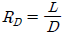
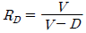
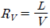
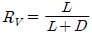
(정답률: 28%)
48. 두께 30cm 의 벽돌로 된 평판노벽을 두께 9cm 석면으로 보온하였다. 내면온도와 외면온도가 각각 1000℃ 와 40℃ 일 때 벽돌과 석면사이의 계면온도는 몇 ℃ 가 되는가? (단, 벽돌노벽과 석면의 열전도도는 각각 3.0, 0.1kcal/mㆍhㆍ℃ 이다.)
- 296℃
- 632℃
- 864℃
- 904℃
(정답률: 37%)
49. 복사에서 스테판-볼츠만(Stefan-Boltzamann)법칙에 대한 설명에 해당하는 것은?
- 온도평형에서 그 물체의 흡수율에 대한 총 복사력의 비는 그 물체의 온도에만 의존한다.
- 어떤 주어진 온도에서 최대 단색광 복사력은 절대 온도에 역비례한다.
- 큰 표면에 의해 차단되는 작은 표면으로부터 나오는 에너지는 오직 시간에만 의존한다.
- 흑체의 총 복사력은 절대온도의 4승에 비례한다.
(정답률: 42%)
50. 탑내에서 기체속도를 점차 증가시키면 탑내 액 정체량(hold up)이 아래로 이동하는 것을 방해할 때의 속도를 무엇이라고 하는가?
- 평균속도
- 부하속도
- 초기속도
- 왕일속도
(정답률: 40%)
51. 고-액 추출이나 액-액 추출에서 추제가 갖추어야 할 조건으로 옳지 않은 것은?
- 선택도가 커야 한다.
- 회수가 용이해야 한다.
- 응고점이 낮고 부식성이 적어야 한다.
- 추질과의 비중차가 작아야 한다.
(정답률: 28%)
52. 내경이 10cm 인 관에 비중이 0.9, 점도가 1.5cP인 액체가 흐르고 있다. 임계속도는 몇 m/s 인가? (단, 임계 레이놀드수는 2100 이다.)
- 0.035
- 3.5
- 0.562
- 5.62
(정답률: 40%)
53. 기체 흡수시 흡수량이나 흡수속도를 크게 하기 위한 조건이 아닌 것은?
- 접촉시간을 크게 한다.
- 흡수계수를 크게 한다.
- 농도와 분압차를 작게 한다.
- 기 - 액 접촉면을 크게 한다.
(정답률: 37%)
54. 건조 특성 곡선에서 항율건조 기간에서 강율건조기간으로 변하는 점을 무엇이라고 하는가?
- 자유(free) 함수율
- 평형(equilibrium) 함수율
- 수축(shrink) 함수율
- 한계(critical) 함수율
(정답률: 47%)
55. 가로 30cm, 세로 60cm 인 직사각형 단면을 갖는 도관에 세로 45cm 까지 액체가 차서 흐르고 있다. 상당직경(equivalent diameter)은 얼마인가?
- 60cm
- 45cm
- 30cm
- 15cm
(정답률: 0%)
56. 환류비에 대한 설명으로 옳지 않은 것은?
- 환류비가 커지면 이론단수는 감소한다.
- 환류비가 무한대일 때 나타나는 단수를 최소이론단 수라 한다.
- 환류비가 크면 클수록 실용적이다.
- 최적 환류비는 시설비와 운전비의 경제성 등을 고려해 구한다.
(정답률: 37%)
57. 다음 x(액상조성)-y(기상조성) 도표에서 원료가 비점이하로 공급될 때의 급액선(q-line)은?
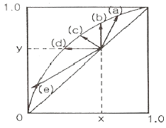
- (a)
- (b)
- (c)
- (d)
(정답률: 37%)
58. 증발관의 효율을 크게 하기 위한 방법으로 가장 거리가 먼 것은?
- 관석을 제거하거나 생성속도를 늦춘다.
- 감압하여 비점을 떨어뜨린다.
- 증발관을 열전도도가 큰 금속으로 만든다.
- 액측 경막열전달계수를 작게 한다.
(정답률: 28%)
59. 다음 방정식 중 원료공급선(feed line)은? (단, f 는 원료의 흐름 중 기화된 증기분율, y 는 기체분율, x는 액체분율 이다.)
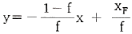
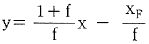
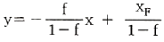
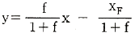
(정답률: 0%)
60. 일정한 상대 휘발도를 갖는 A, B 2성분계 증류에서 탑상 및 탑저 제품의 A성분 몰분율이 각각 0.97, 0.06 이라면 최소단수는 얼마인가?(단, 순수한 액체 A와 B의 증기압은 각각 0.8, 0.4atm이다.)
- 6
- 7
- 8
- 9
(정답률: 10%)
4과목: 반응공학
61. 다음 그림에 대응하는 라플라스 함수는?
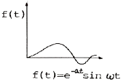
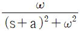
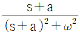
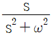
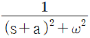
(정답률: 30%)
62. 최종값에 도달하는 제어시간은 오래 걸리나 offset을 제거할 수 있는 제어기는?
- 비례 제어기
- 비례-미분 제어기
- 비례-적분 제어기
- 미분 제어기
(정답률: 39%)
63. 공정의 정상상태 이득(k), ultimate gain(kcu) 그리고 ultimate period(Pu)를 실험으로 구하였다. k=1, Kcu=4, Pu =6.28일 때, 이와 같은 결과를 주는 일차시간지연 모델,
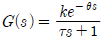
의 시간상수 τ를 구하면?- 1.41
- 2.24
- 3.16
- 3.87
(정답률: 28%)
64. 다음의 그림과 같이 주어지는 계단함수 u(t)의Laplace변환이 올바른 것은?
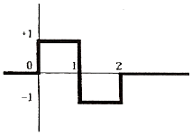
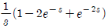
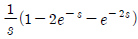
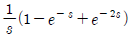
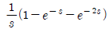
(정답률: 30%)
65. 제어기의 와인드업(windup) 현상에 대한 설명 중 잘못된 것은?
- 이 문제를 해소하기 위한 기능을 ant-windup 이라 부른다.
- Windup이 해소되기까지 제어기는 사실상 제어 불능 상태가 된다.
- 공정의 출력이 제어기에 바르게 전달되지 못할 때에 나타나는 현상이다.
- 제어기의 적분동작과 관련된 현상이다.
(정답률: 25%)
66. 전달함수에 대한 설명 중 잘못된 것은?
- 입출력 변수 사이의 관계를 나타낸 것이며 초기조건의 영향을 표현하지는 않는다.
- 공정의 동특성이 선형 미분방정석으로 표현된다는 가정하에 얻어진 것이다.
- 공정의 단위 계단응답의 Laplace 변환과 일치한다.
- 전달함수의 입출력 변수는 실제 변수와 정상상태 값과의 차이인 편차변수(deviation variable)이다.
(정답률: 9%)
67. 2차계의 과소감쇠(under damped) 단위계단응답에서 상승시간(궁극적인 값에 처음으로 도달하는데 걸리는 시간)을 계산하는 방법은? (단, 공정이득이 1 인 경우이다.)
- 단위계단응답이 0 이 되는 첫 번째 시간을 구한다.
- 단위계단응답이 1 이 되는 첫 번째 시간을 구한다.
- 단위계단응답의 미분값이 0 이 되는 첫 번째 시간을 구한다.
- 단위계단응답의 미분값이 1 이 되는 첫 번째 시간을 구한다.
(정답률: 10%)
68. 1차계의 단위계단응답에서 시상수를 실험을 통하여 구하는 방법은?
- 단위계단응답의 초기의 기울기의 0.632를 곱하여 구한다.
- 단위계단응답을 지켜본 후 응답이 더 이상 변하지 않는 시간으로 한다.
- 단위계단응답의 초기 미분 값으로 한다.
- 최종 단위계단 응답값의 63.2%에 도달한 시간을 구한다.
(정답률: 34%)
69. 어떤 이차계의 특성방정식의 두 근이 다음과 같다고 할 때 안정한 공정은?
- 1+3i, 1-3i
- -1, 2
- 2, 4
- -1+2i, -1-2i
(정답률: 37%)
70. 증류탑의 응축기와 재비기에 수은기둥 온도계를 설치하고 운전하면서 한 시간마다 온도를 읽어 다음 그림과 같은 데이터를 얻었다. 이 데이터와 수은기둥 온도 값 각각의 성지로 옳은 것은?
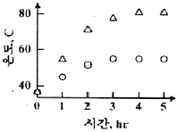
- 연속(continuous),아날로그
- 연속(continuous),디지털
- 이산시간(discrete-time),아날로그
- 이산시간(discrete-time),디지털
(정답률: 30%)
71. 피드포워드(feedforward) 제어에 대한 설명 중 옳지 않은 것은?
- 화학공정제어에서는 lead-lag 보상기로 피드포워드 제어기를 설계하는 일이 많다.
- 피드포워드 제어기는 폐루프 제어시스템의 안정도(stability)에 영향을 주지 않는다.
- 제어계 설계시 피드포워드 제어와 피드백 제어 중 하나를 선택하여야 한다.
- 피드포워드 제어기의 설계는 공저의 정적 모델, 혹은 동적 모델에 근거하여 설계될 수 있다.
(정답률: 19%)
72. Feedback 제어에 대한 설명 중 옳지 않은 것은?
- 중요변수(CV)를 측정하여 이를 설정값(SP)과 비교하여 제어동작을 계산한다.
- 외란(DV)을 측정할 수 없어도 feedback 제어를 할 수 있다.
- PID 제어기는 feedback 제어기의 일종이다.
- Feedback 제어는 Feedforward 제어에 비해 성능이 이론적으로 항상 우수하다.
(정답률: 40%)
73. 다음 그림의 블록선도에서
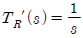
일 때, 서보(servo)문제의 정상상태 잔류편차(offset)는 얼마인가?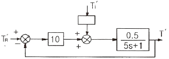
- 0.133
- 0.167
- 0.189
- 0.213
(정답률: 알수없음)
74. 전달함수가
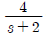
인 1차계의 응답에 관한 옳은 설명은?- 단위사인파 응답의 진폭은 항상 1보다 작다.
- 단위사인파 응답의 위상각은 0과 90°사이이다.
- 단위계단 응답의 최종치는 1이다.
- 단위충격(unit impulse)응답의 최종치는 0이다.
(정답률: 16%)
75. 연속 입출력 흐름과 내부 가열기가 있는 저장조의 온도를 어떤 값으로 유지하기 위해 들어오는 입력흐름의 온도와 유량을 조작하여 나가는 출력흐름의 온도와 유량을 제어하고자 하는 시스템을 분류한다면 어떠한 것에 해당하는가?
- 다중 입력-다중 출력 시스템
- 다중 입력-단일 출력 시스템
- 다중 입력-단일 출력 시스템
- 다중 입력-다중 출력 시스템
(정답률: 34%)
76. 다음 중 측정 가능한 외란 (measurable disturbance)을 효과적으로 제거하기 위한 제어기는?
- 앞먹임 제어기(Feedforward Controller)
- 되먹임 제어기(Feedback Controller)
- 스미스 예측기(Smith Predictor)
- 다단 제어기(Cascade Controller)
(정답률: 알수없음)
77. 현장에서 주로 쓰이는 대부분의 제어밸브가 등비(equalper centage)조절특성을 나타내는 가장 큰 이유는?
- 밸브의 열림 특석이 좋기 때문이다.
- 밸브의 무반응 영역이 존재하지 않기 때문이다.
- 밸브의 공동화(cavitation)현상이 없기 때문이다.
- 설치밸브특성(installed valve characteristics)이 선형성을 보이기 때문이다.
(정답률: 19%)
78. 다음 그림과 같은 제어계의 전달함수
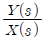
는?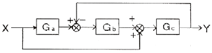
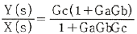
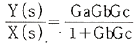
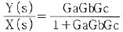
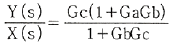
(정답률: 알수없음)
79. PID 제어기의 전달함수의 형태로 옳은 것은?(단, Kc는 비례이득, τI는 적분시간상수, τD는 미분시간상수를 나타낸다.)
(정답률: 40%)
80. 로 표현되는 공정의 제어계에 대한 설명 중 잘못된 것은?
- P 제어기를 사용하면 설정값 계단 변화에 대해 잔류오차(offset)가 발생하지 않는다.
- P 제어기를 사용하면 입력측 외란(input disturbance)계간 변화에 대해 잔류오차(offset)가 발생하지 않는다.
- P 제어기를 사용하면 출력측 외란(output disturbance)계단 변화에 대해 잔류오차(offset)가 발생하지 않는다.
- P 제어기를 사용하는 경우 제한된 비례이득 범위에서만 제어계의 안정성이 보장된다.
(정답률: 25%)
5과목: 공정제어
81. 암모니아 합성을 위한 CO가스 전화공정에서 다음과 같은 조성의 A, B 두 가스를 사용할 때 A 가스 100 에 대하여 B 가스를 얼마의 비로 혼합하면 암모니아 합성원료로 적합할 수 있는가? (단, CO 전화 반응효율은 100%로 가정한다.)
- 147
- 157
- 167
- 177
(정답률: 0%)
82. 다음 중 산성이 가장 강한 것은?
- C6H5SO3H
- C6H5OH
- C6H5COOH
- CH3CH2COOH
(정답률: 알수없음)
83. 물과 같은 연속상에 단량체를 액적으로 분산시킨 상태에서 중합하는 방법으로, 고순도의 폴리머가 직접 입상으로 얻어지며, 연속 교반이 필요하고 중합열의 제어가 용이한 중합방법은?
- 괴상 중합
- 용액 중합
- 현탁 중합
- 유화 중합
(정답률: 알수없음)
84. 접착속도가 매우 빨라서 순간접착제로 사용되는 성분은?
- 시아노아크릴레이트
- 아크릴에멀젼
- 에폭시레진
- 폴리이소부틸렌
(정답률: 알수없음)
85. 암모니아 합성용 수소가스의 기본적인 정제순서를 옳게 나타낸 것은?
- 워터가스전화-황화합물제거-CO2제거-CO제거-CH4제거
- CO2제거-황화합물제거-워터가스전화-CO제거-CH4제거
- 워터가스전화-CO2제거-황화합물제거-CO제거-CH4제거
- 황화합물제거-워터가스전화-CO2제거-CO제거-CH4제거
(정답률: 0%)
86. 다음 중 연실의 주요 기능은 무엇인가?
- 질소산화물의 회수
- 함질황산을 Glover 탑에 공급
- 함질황산의 탈질
- 기체의 혼합과 SO2를 산화시키는 공간 제공
(정답률: 알수없음)
87. 20℃에서 NaCl 포화용액을 이용하여 이온교환막법으로 NaOH제조시 Cl2 3.55g 를 함께 얻을 수 있었으며, 부반응은 일어나지 않았다. 10A의 일정한 전류로 전기분해를 하였을 경우 총 소요시간은? (단, 원자량은 Na 23, Cl 35.5 이다.)
- 64분 20초
- 32분 10초
- 16분 5초
- 8분 2.5초
(정답률: 10%)
88. 삼산화황과 디메틸에테르를 반응시킬 때 주생성물은?
- (CH3)3 SO3
- (CH3)2 SO4
- CH3-OSO3H
- CH3-SO2-CH3
(정답률: 20%)
89. 다음 중 칼륨비료의 원료가 아닌 것은?
- 해조
- 초목재
- 칠레초석
- 용광로 dust
(정답률: 10%)
90. 황산제조의 원료로 사용되는 것이 아닌 것은?
- 황철광
- 자류철광
- 자철광
- 황동광
(정답률: 42%)
91. Cyclone 의 주된 집진원리에 해당되는 것은?
- 여과
- 원심력
- 전하작용
- 작용ㆍ반작용
(정답률: 34%)
92. 도시가스 제조 프로세스 중 접촉분해 공정에 대한 설명으로 옳지 않은 것은?
- 일정온도, 압력 하에서 수증기 비를 증가시키면 CH4, CO2 의 생성이 많아진다.
- 반응압력을 올리면 CH4, CO2 의 생상이 많아진다.
- 반응온도를 상승시키면 CO, H2 가 많이 생성된다.
- 촉매를 사용하여 반응온도는 400~800℃ 이며 탄화수소와 수증기를 촉매 반응시키는 방법이다.
(정답률: 20%)
93. 다음 중 니트로벤젠을 환원시킬 때 첨가하여 을 가장 많이 생성하는 것은?
- Zn+ acid
- Zn + water
- Cu +H2
- Fe + acid
(정답률: 19%)
94. 다음 중 암모니아 산화반응시 촉매로 주로 쓰이는 것은?
- Nd - Mo
- Ra
- Pt - Rh
- Al2O3
(정답률: 30%)
95. 일반적으로 화장품, 의약품, 정밀화학 제조 등의 화학공업에 주로 사용되는 반응 공정은 어떠한 형태인가?
- 회분식 반응 공정
- 연속식 반응 공정
- 유동층 반응 공정
- 관형 반응 공정
(정답률: 10%)
96. 부타디엔에 무수말레인산을 부가하여 환상화합물을 얻는 반응은?
- Diels-Alder 반응
- Wolff-Kishner 반응
- Gattermann-Koch 반응
- Fridel-Craft 반응
(정답률: 0%)
97. 황산제조방법 중 연실법에 있어서 장치의 능률을 높이고 경제적으로 조업하기 위하여 개량된 방법 및 설비가 아닌 것은?
- OPL 법
- Pertersen Tower 법
- Meyer 법
- Mosanto 법
(정답률: 알수없음)
98. 하루 117ton 의 NaCl 을 전해하는 NaOH 제조 공장에서 부생되는 H2 와 Cl2 를 합성하여 36.5% HCl을 제조할 경우 하루 약 몇 ton 의 HCl 이 생산되는 가? (단, NaCl 은 100%, H2 와 Cl2는 99% 반응하는 것으로 가정한다.)
- 200
- 185
- 56
- 100
(정답률: 19%)
99. 가성소다 제조시 수은법에서 해홍실에 넣어 단락 전지를 구성하는 물질은?
- 흑연
- 철
- 구리
- 니켈
(정답률: 30%)
100. 질소비료 중 암모니아를 원료를 하지 않는 비료는?
- 황산암모늄
- 요소
- 질산암모늄
- 석회질소
(정답률: 알수없음)
6과목: 화학공업개론
101. 균일계 1차 액상 반응이 이상 관형 반응기(ideal tubular reactor)에서 전화율 50% 로 진행된다. 다른 조건은 동일하고 반응기의 크기만 2배로 늘린다면 전화율은?
- 67%
- 75%
- 90%
- 100%
(정답률: 37%)
102. 부피가 5L 인 회분식반응기에 어떤 출발원료 200kg 을 넣고 일정한 시간동안 반응시켰더니 5kg 이 남아 있었다. 반응식이 2A + B → P 일 때 반응물질 A(출발원료)의 전환율은 몇 % 인가? (단, A 와 B 의 초기 몰 비는 2:1 이다.)
- 92%
- 96.5%
- 97.5%
- 98.5%
(정답률: 30%)
103. 어떤 반응의 온도를 24℃ 에서 34℃ 로 증가시켰더니 반응 속도가 2.5배로 빨라졌다면, 이 때의 활성화 에너지는 몇 kcal 인가?
- 10.8
- 12.8
- 16.6
- 18.6
(정답률: 알수없음)
104. A → P 1차 액상반응이 부피가 같은 N 개의 직렬 연결된 완전혼합 흐름반응기에서 진행될 때 생성물의 농도변화를 옳게 설명한 것은?
- N 이 증가하면 생성물의 농도가 점진적으로 감소하다 다시 증가한다.
- N 이 작으면 체적 합과 같은 관형반응기 출구의 생성물 농도에 접근한다.
- N 은 체적 합과 같은 관형반응기 출구의 생성물 농도에 무관하다.
- N 이 크면 체적 합과 같은 관형반응기 출구의 생성물 농도에 접근한다.
(정답률: 20%)
1⑤. 혼합 흐름 반응기에서 반응 속도식이  인 반응에 대해 50% 전화율을 얻었다. 모든 조건을 동일하게 하고 반응기의 부피만 5배로 했을 경우 전화율은?
인 반응에 대해 50% 전화율을 얻었다. 모든 조건을 동일하게 하고 반응기의 부피만 5배로 했을 경우 전화율은?
- 0.6
- 0.73
- 0.8
- 0.93
(정답률: 30%)
106. 반응기에 유입되는 물질량의 체류시간에 대한 설명으로 옳지 않은 것은?
- 반응물의 부피가 변하면 체류시간이 변한다.
- 반응물이 실제의 부피 유량으로 흘러 들어가면 체류시간이 달라진다.
- 액상반응이면 공간시간과 체류시간이 같다.
- 기상반응이면 공간시간과 체류시간이 같다.
(정답률: 30%)
107. 반응차수 1차인 반응의 반응물 A 를 공간시간(space time)이 같은 다음의 반응기에서 반응을 진행시킬 때 가장 유리한 반응기는?
- 이상 혼합 반응기
- 이상 관형 반응기
- 이상 관형 반응기와 이상 혼합 반응기의 직렬 연결
- 전화율에 따라 다르다.
(정답률: 알수없음)
108. A + B → R 인 2차 반응에서 CAO 와 CBO 의 값이 서로 다를 때 반응속도 상수 k 를 얻기 위한 방법은?
 와 t 를 도시(plot)하여 원점을 지나는 직선을 얻는다.
와 t 를 도시(plot)하여 원점을 지나는 직선을 얻는다. 와 t 를 도시(plot)하여 원점을 지나는 직선을 얻는다.
와 t 를 도시(plot)하여 원점을 지나는 직선을 얻는다. 와 t 를 도시(plot)하여 절편이
와 t 를 도시(plot)하여 절편이  인 직선을 얻는다.
인 직선을 얻는다.- 기울기가 1 +(CAO - CBO)2k 직선을 얻는다.
(정답률: 알수없음)
109. 일반적으로 암모니아(ammonia)의 상업적 합성반응은 다음 중 어느 화학반응에 속하는가?
- 균일(homogeneous) 비촉매 반응
- 불균일(heterogeneous) 비촉매 반응
- 균일촉매(homogeneous catalytic) 반응
- 불균일촉매(heterogeneous catalytic) 반응
(정답률: 20%)
110. 양론식 A + 3B → 2R + S 가 2차반응 -rA = k1CACB 일 때 rA, rB 와 rR 의 관계식으로 옳은 것은?
- rA = rB = rR
- -rA = -rB = rR
- -rA = -(1/3)rB =(1/2)rR
- -rA = -3rB = 2rR
(정답률: 9%)
111. 가장 일반적으로 사용되는 반응 속도식은?
(정답률: 28%)
112. A → R 인 비가역 1차 반응에서 다른 조건이 모두 같을 때 초기농도 CA0 를 증가시키면 전화율은?
- 증가한다.
- 감소한다.
- 일정하다.
- 처음에는 증가하다가 점차 감소한다.
(정답률: 알수없음)
113. 1atm, 610K 에서 다음과 같은 가역 기초반응이 진행될 때 평형상수 Kp 와 정반응 속도식 kp1PA2 의 속도상수 kp1이 각각 0.5atm-1 과 10mol/Lㆍatm2ㆍh 일 때 농도항으로 표시되는 역반응 속도 상수는? (단, 이상기체로 가정한다.)
- 1000 h-1
- 100 h-1
- 10 h-1
- 0.1 h-1
(정답률: 10%)
114. 유동층 반응기에 대한 설명 중 가장 거리가 먼 내용은?
- 유동층에서의 전화율은 고정층 반응기에 비하여 낮다.
- 유동화 물질은 대부분 고체이다.
- 석유나프타의 접촉분해 공정에 적합하다.
- 작은 부피의 유체를 처리하는데 적합하다.
(정답률: 20%)
115. 그림과 같이 3개의 플러그 흐름 반응기를 2개는 직렬로 연결한 뒤 다시 나머지 하나와 병렬로 연결된 반응조가 있다. 이 때 반응물 A 를 FA0[mol/min] 으로 F 지점에 공급했을 때 D 와 E 로 보내지는 반응물의 몰 유량 FA0.D와 FA0.E 를 옳게 나타낸 것은?(단, 반응이 완결된 뒤인 G 지점에서의 전화율은 동일하다.)
(정답률: 20%)
116. 균일 반응 에서 반응속도가 옳게 표현된 것은?
(정답률: 알수없음)
117. A → B 1차 액상 등온반응이 진행될 때 반응속도, 전화율, 반응물 농도와의 관계를 옳게 설명한 것은?
- 반응물 농도가 크면 반응 속도는 커진다.
- 전화율이 1 이면 반응 속도는 최대이다.
- 반응물 농도가 0 이면 반응 속도는 커진다.
- 전화율이 0 이면 반응 속도는 최소이다.
(정답률: 19%)
118. A → P의 비가역 1차 반응에서 A 의 전화율 관련식을 옳게 나타낸 것은?(단, NA0는 초기의 몰수이고 NA는 시간 t 에서 존재하는 몰수이다.)
- NA = NAO(1 - XA)
(정답률: 알수없음)
119. 기상 1차 반응에 관한 속도식을 , 단위를 [atm/h] 로 표시할 때 반응 속도상수 3.5 의 단위로 옳은 것은?
- h-1
- atmㆍh
- atm-1ㆍh-1
- atmㆍh-1
(정답률: 19%)
120. A → 2R 인 기체상 반응은 기초 반응(elementary Teaction)이다. 이 반응이 순수한 A 로 채워진 부피가 일정한 회분식(batch) 반응기에서 일어날 때 10분 반응후 전화율이 80% 이었다. 이 반응을 순수한 A 를 사용하며, 공간시간(space time)이 10분인 mixed flow 반응기에서 일으킬 경우 A 의 전화율은 약 얼마인가?
- 91.5%
- 80.5%
- 65.5%
- 51.5%
(정답률: 20%)